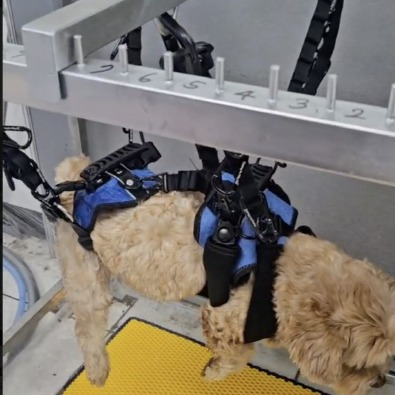
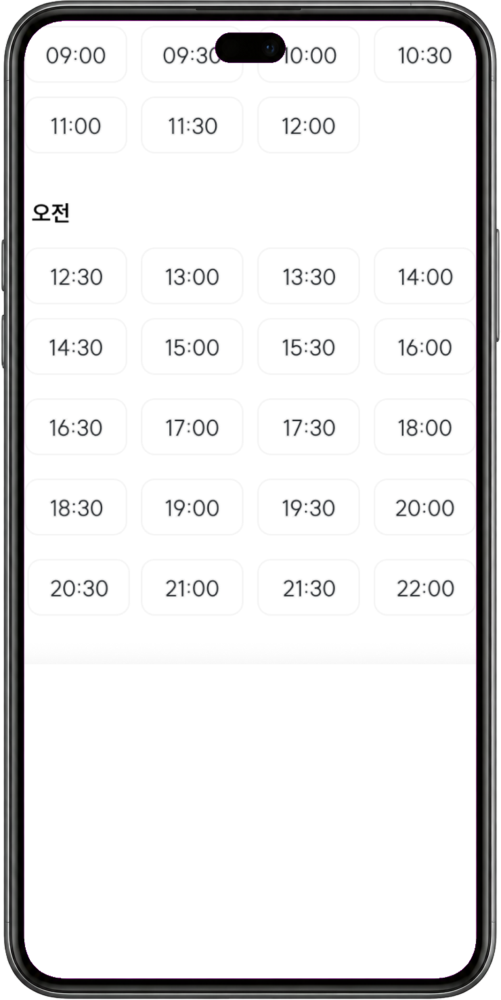
Project 03 · Physical Service Planning
워시앤펫은 반려견 목욕 장치와 예약 화면을 함께 설계한 피지털 서비스예요. 실제 반려견과 두 차례 시연하며 고정 방식과 세척 순서를 바꾸고, 예약·접수·건강 확인·세척·건조·인계가 한 흐름으로 이어지도록 정책과 운영 기준을 설계했어요.
Project Process
10.31
1차 시연
실제 장치와 목욕 순서를 처음부터 끝까지 확인하고 보호자 의견을 들었어요
11.12 – 13
경쟁사 조사와
예약 플로우
가입 여부와 사용 이력에 따라 예약 경로를 세 갈래로 나눴어요
11.19
2차 시연
하네스와 체결 순서가 바뀐 상태로 다시 기록했어요
11.25
초도기획안
서비스 정의와 제공 범위를 문서로 고정했어요
11.28 – 29
정책 · 매뉴얼
웹 기획
약관, 서비스 프로세스, 매장·비상 매뉴얼, 웹사이트 기획서를 썼어요
재직 시작일 2024.10.29 이후에 만든 자료만 썼어요.
First Test · 2024.10.31
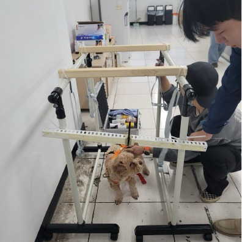
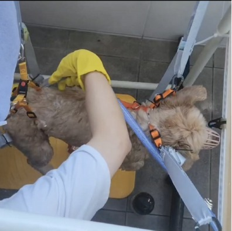
반려견 1마리와 보호자 1명과 함께 설명 · 하네스 체결 · 고정을 실제 순서로 확인했어요
세척과 건조까지 마친 뒤 15분 동안 의견을 들었어요
“척추와 슬개골에 무리가 가기 쉬운 매다는 형태는 강아지에게 부담이 크기 때문에 선호하지 않습니다.”
시연 참여 보호자
“이중모를 가진 강아지는 겉만 씻기는 경우가 많습니다. 빠르게 씻긴다고 해도 충분히 세척되지 않을 수 있습니다.”
시연 참여 보호자
Comparison · 10.31 → 11.19
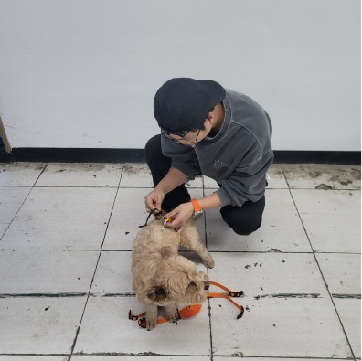
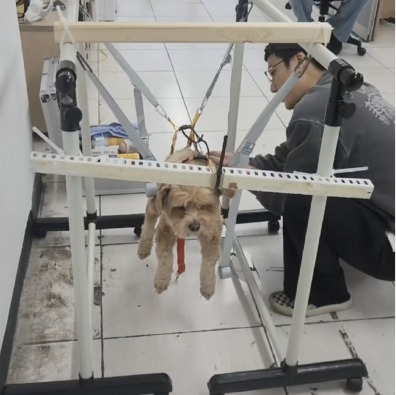
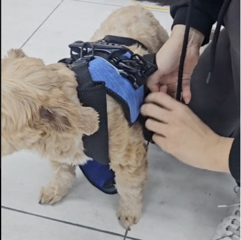
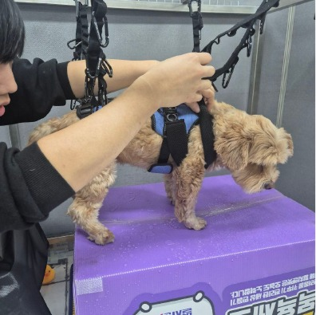
두 번째 시연에서 고정 안정성이 좋아지고 세척 시간이 단축되기 시작한 것을 정성적으로 확인했어요. 다만 수치화된 시간 기록과 반복적인 안전성 검증까지 진행하지는 못했어요.
Booking Paths
Guest Booking
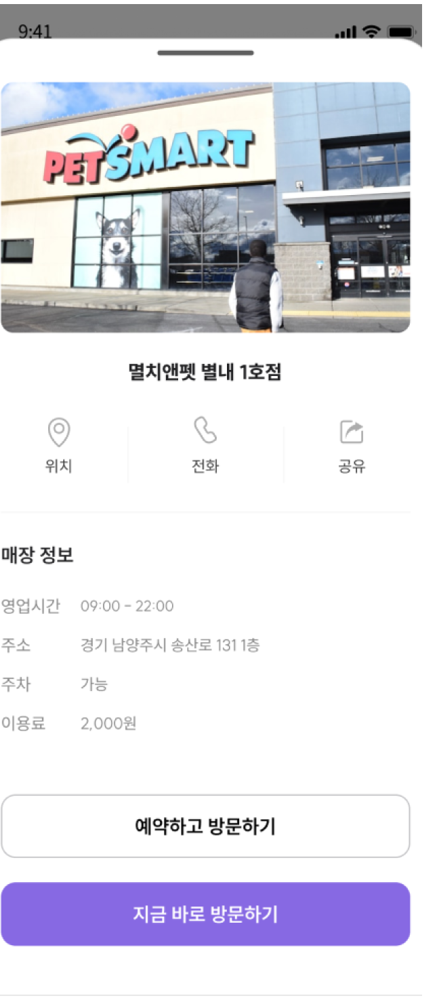
01매장 확인
영업시간·주소·이용료
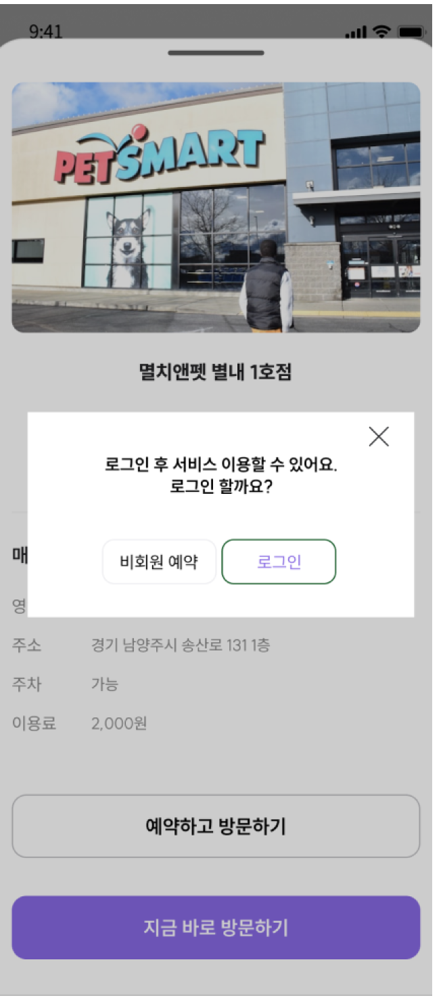
02비회원 선택
로그인할지 비회원으로 갈지 물어봐요
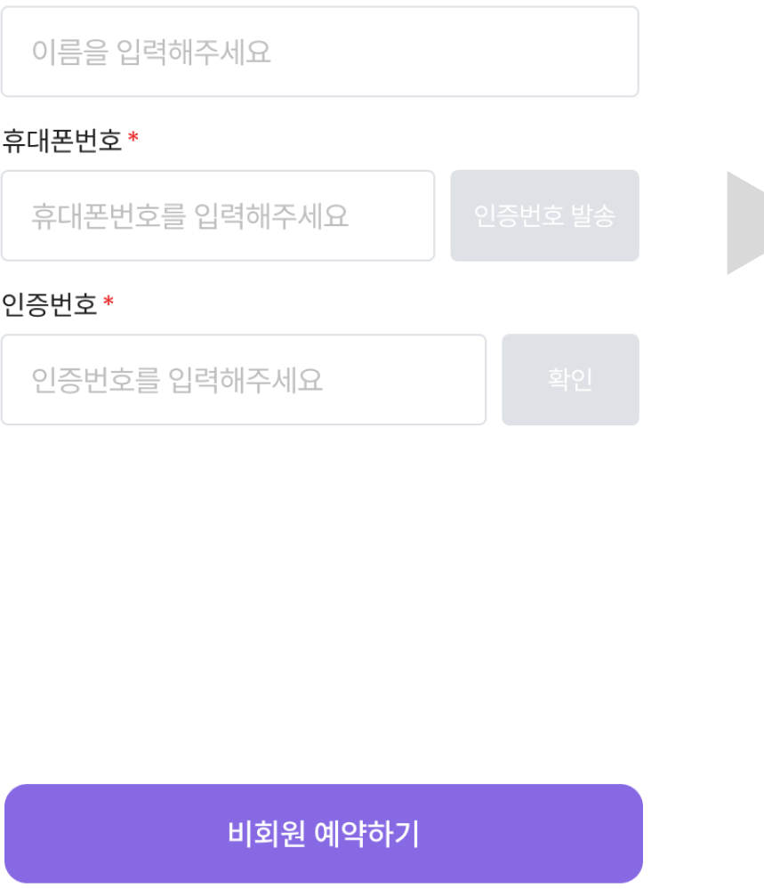
03연락처 인증
예약 확인에 꼭 필요한 것만 받아요
04반려동물 정보
이름·견종·몸무게·나이·성별
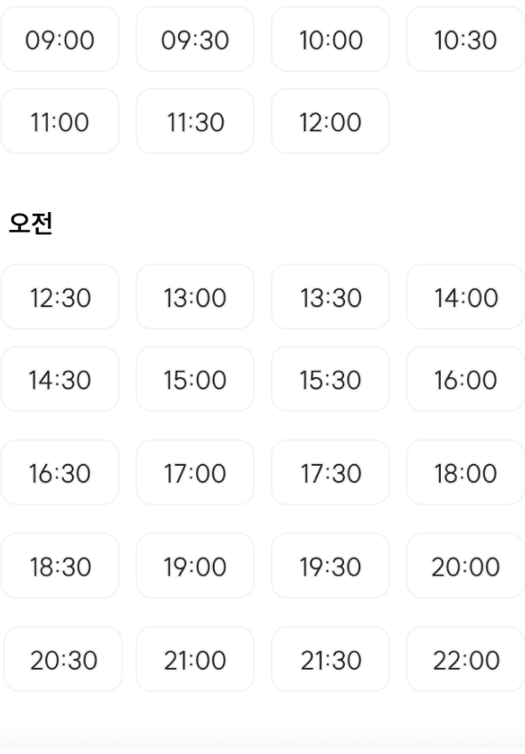
05날짜·시간
30분 단위로 시간을 골라요
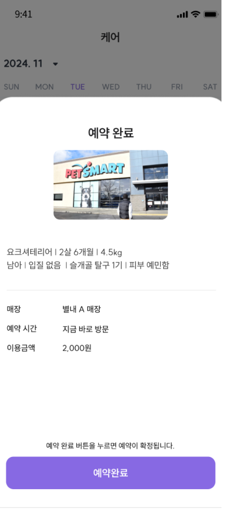
06예약 확정
매장과 시간, 이용금액을 확인해요
07결제
결제 수단과 할인을 확인해요
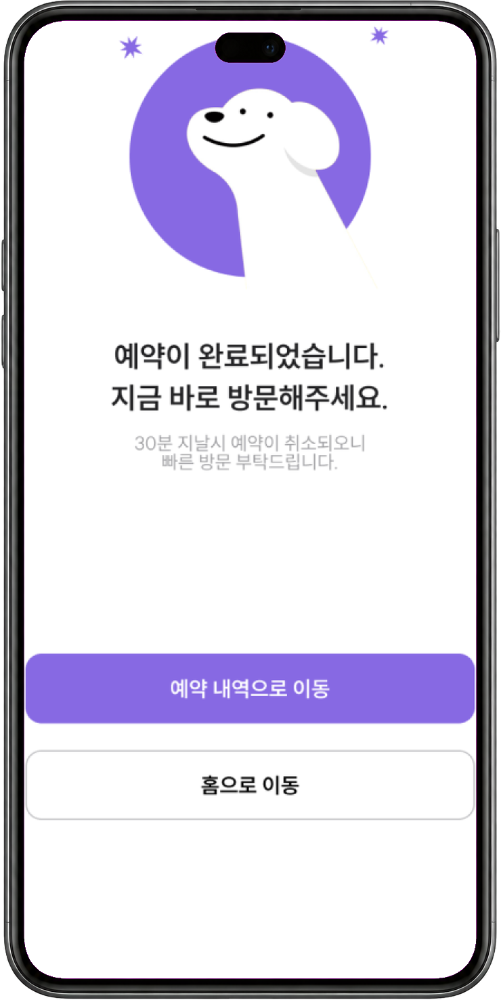
08완료 안내
30분이 지나면 취소된다고 알려줘요
화면 속 상품명과 가격은 기획 단계의 샘플이에요.
Returning User
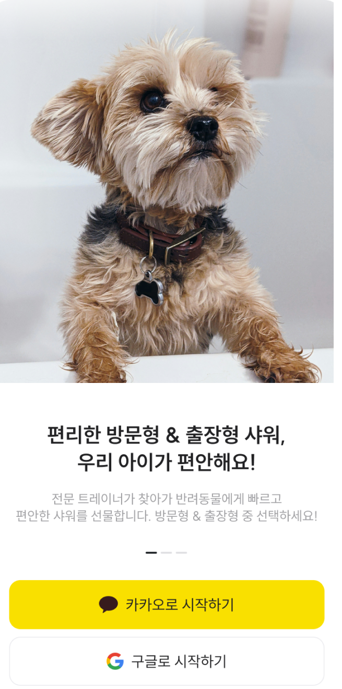
카카오 로그인
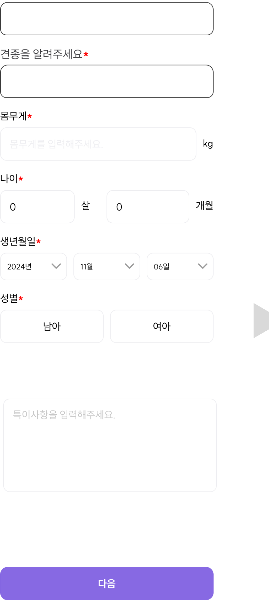
반려동물 정보
예약 확정
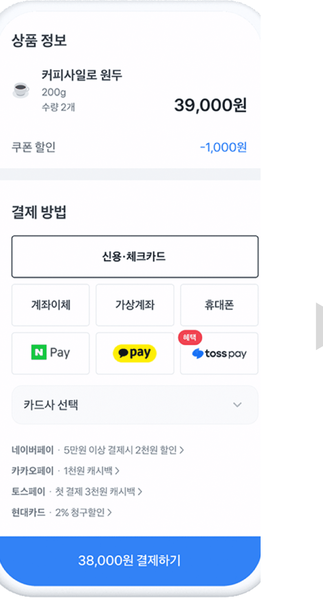
결제
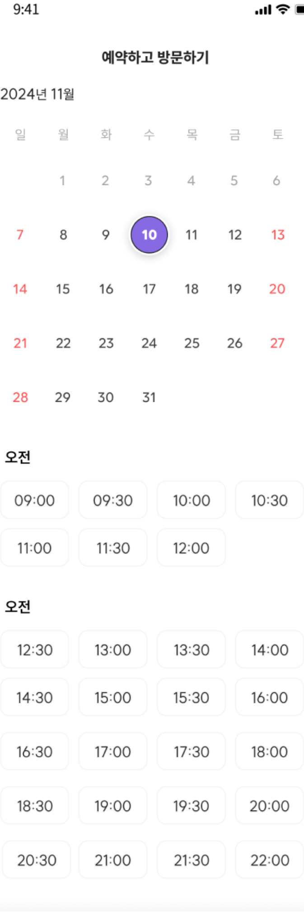
날짜·시간
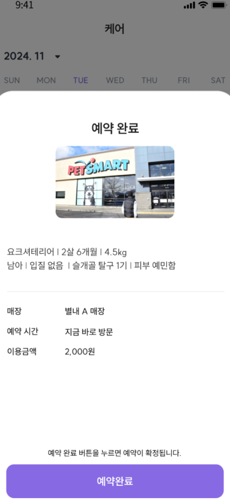
예약 확정
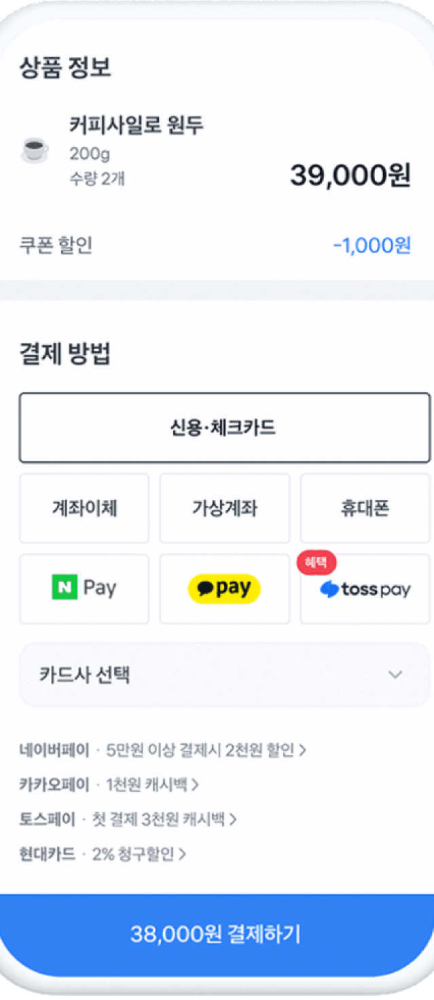
결제
반려동물 정보 입력과 연락처 인증을 건너뛰어 예약까지 여덟 단계가 셋으로 줄었어요.
Service Blueprint
근거 문서 · 서비스프로세스_1128 · 비상 상황 매뉴얼_1128 · 매장 운영 매뉴얼 정책서_1128
Documents